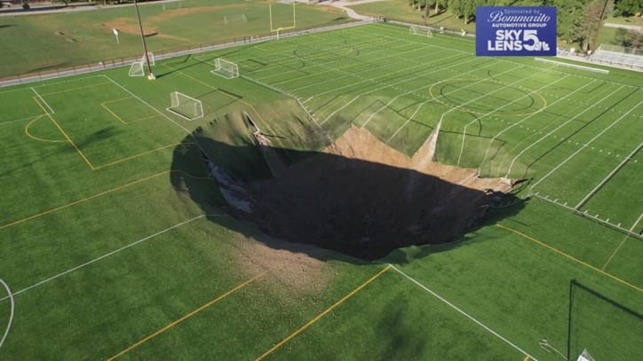
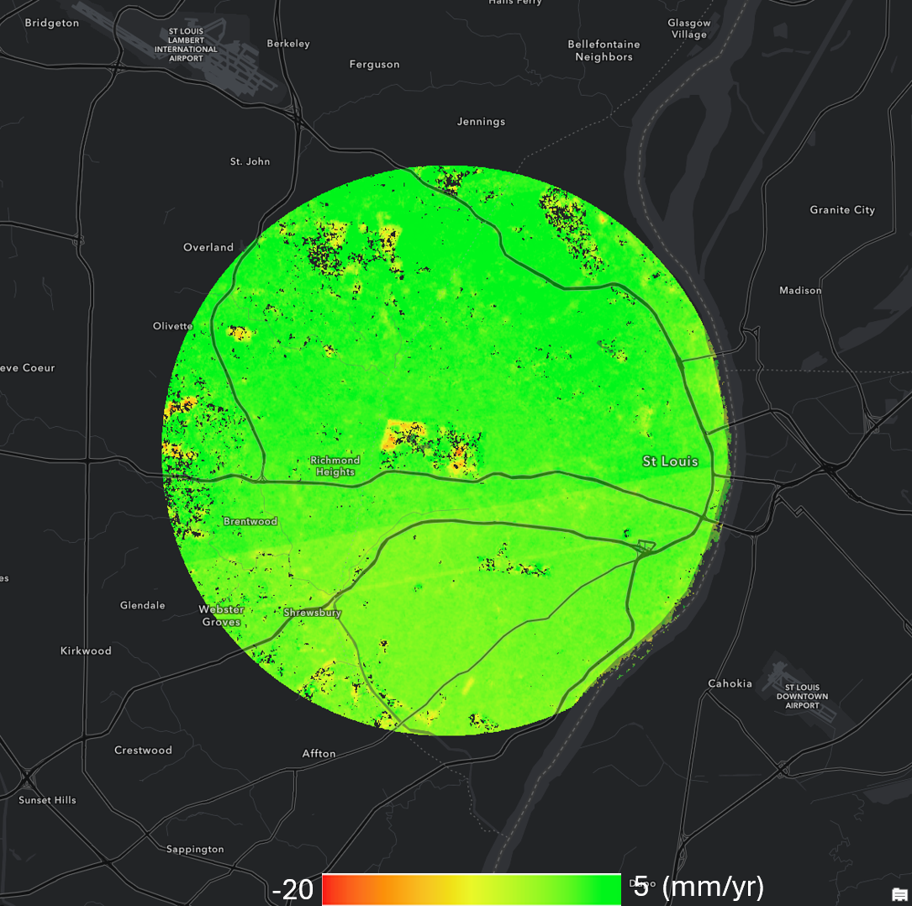
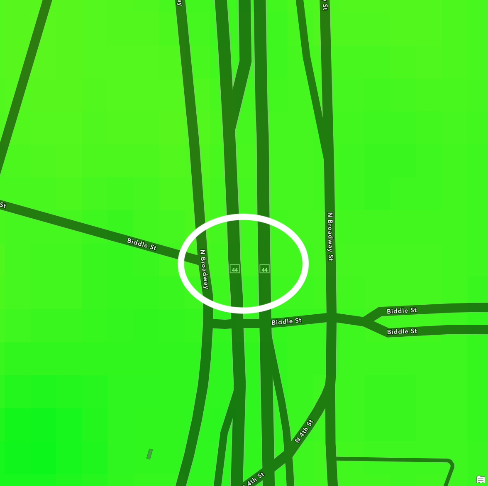

Selected work · 05
Sinkholes in cities
Urban ground failure and the satellite tools that can see it coming.
Urban hazard
Ground failure
InSAR · Sentinel-1
St. Louis, MO
Active research
Urban ground failure and the satellite tools that can see it coming.
InSAR time series over St. Louis (2017–2025) shows most sinkhole-affected areas are near-stable — but the surface can still open without warning. Detecting precursory deformation requires higher resolution and multi-source data than satellite radar alone can provide.
Imagine watching the World Cup final at the peak of excitement — when a giant hole suddenly opens in the middle of the pitch. That scenario stopped being hypothetical at Gordon Moore Park's football field in Alton, Illinois, where a sinkhole tore open the turf without warning. Would you still step onto a grass field with the same ease?
Now imagine driving downtown when news breaks that a massive void has opened beneath a highway overpass. On the morning of June 14, 2026, that became reality in St. Louis: a sinkhole tore open under the elevated section of Interstate 44/70 near North Broadway and Biddle Street, just north of The Dome at America's Center. The void exposed bridge column footings, forced the closure of I-44, I-70, and surrounding downtown corridors for nearly two weeks, and raised an unsettling question for every driver who crosses an overpass: what exactly is holding this up?
These two events happened within miles and months of each other, right here in the St. Louis region. They are not outliers. They are reminders that the ground beneath a city is a layered system of aging pipes, water-saturated soils, and dissolving rock — and when that system fails, it fails fast.

.jpg)
Sinkholes are depressions or collapses in the ground surface caused by the movement of rock and sediment into underground voids. The classic mechanism is dissolution of carbonate bedrock — limestone or dolomite — by mildly acidic groundwater. Water works its way through cracks over centuries, slowly dissolving the rock and carrying it away. The result is a growing underground cavity. When the soil above that cavity can no longer support its own weight, it collapses, and a sinkhole appears at the surface, sometimes with no warning at all.
This process defines what geologists call karst terrain: a landscape shaped by dissolving bedrock, underground drainage, caves, and springs. Roughly 13% of the Earth's land surface is karst (Witze, 2013), and Missouri sits squarely within one of the most karst-rich regions in North America.
But not all sinkholes are purely geological. In urban environments, aging infrastructure is a major accelerant. A failing water or sewer pipe creates sustained underground water flow. That flow picks up soil particles — a process called soil piping or internal erosion — and transports them into existing voids. The void grows from the inside out. On the surface, nothing is visible until the moment of collapse. This is precisely what happened on North Broadway in June 2026, and it is why cities with aging pipe networks face a compounding risk: old geology plus old infrastructure.
Groundwater pumping, stormwater runoff from impervious surfaces, and construction can all accelerate void development further. Even a sudden rainstorm can destabilize a cavity that has been growing quietly for years.
Sinkholes are not a regional curiosity. About 25% of the world's population obtains its drinking water from karst aquifers (Youssef et al., 2012), meaning the same geology that produces sinkholes also supplies water to one in four people on Earth. When a sinkhole opens a direct conduit between the surface and the aquifer, contaminants bypass the natural filtration layer and reach drinking water almost immediately.
In the United States, damage from karst subsidence and sinkhole collapse is estimated at more than $304 million per year (Weary and Doctor, 2014). Florida, whose shallow carbonate geology sits beneath a dense urban population, recorded nearly 25,000 sinkhole insurance claims between 2006 and 2010 alone — roughly 15 claims a day. These numbers reflect only reported events; uncounted smaller collapses, foundation cracks, and road failures add considerably to the true cost.
The hazard extends to transportation, utilities, and public safety. Roads and bridge supports sit above geology that was never designed to be permanent. When the ground beneath them shifts, the consequences can be sudden and catastrophic.
Missouri's geology makes it one of the most sinkhole-prone states in the country. Much of the state sits on carbonate bedrock — limestone and dolomite — that has been dissolving for millennia. The Missouri Department of Natural Resources has identified approximately 16,000 known sinkholes across the state, with more discovered every year. The largest known example covers roughly 700 acres in western Boone County. Many more go unreported, hidden beneath fields, roads, and the concrete of cities.
In St. Louis specifically, an additional hazard lurks beneath the surface: a network of historic brewery caves and tunnels, many of which have never been fully mapped. Areas near the old Lafayette Brewery Cave in north St. Louis carry elevated collapse risk because the underground space may still be connected to adjacent soil voids. When water main breaks occur nearby, soil can pipe directly into those historical voids.
The spring of 2025 and summer of 2026 brought the issue to the surface — literally.
For many St. Louis residents, these events have become impossible to ignore. After several sinkholes opened across the city in a single day — April 19, 2025 — the question shifted from "could this happen?" to "where will it happen next?" People walking past road barriers on Cass Avenue, avoiding the intersection near the old brewery cave, or reading about exposed bridge footings on I-44 are all asking the same thing: how much of what I walk and drive on every day is actually holding up?
The anxiety is not irrational. A city whose water infrastructure averages over 80 years old, sitting atop carbonate bedrock riddled with natural voids and historic tunnels, faces a quiet, compounding hazard. Unlike earthquakes or floods, sinkholes give almost no visible warning. One moment the ground is there. The next, it is not.
That combination of hidden geology, aging pipes, and the sudden, personal scale of a collapse — a hole in your front yard, a cracked foundation, a road you drove on yesterday now closed — is what makes urban sinkhole risk feel different from other hazards. It is close. It is unpredictable. And it raises a straightforward question: can we use satellite data to say anything useful about where the risk is highest?
To investigate ground stability across the St. Louis area, I processed Sentinel-1 VV ascending acquisitions spanning 2017 to 2025 using the Small Baseline Subset (SBAS) InSAR method. SBAS chains together hundreds of interferograms with short temporal and spatial baselines, producing a time series of surface displacement at each coherent pixel. The result is a map of average line-of-sight (LOS) velocity — positive meaning motion toward the satellite, negative meaning motion away — at millimeter-per-year precision across the city.
The broad picture is reassuring: most of the St. Louis urban area is relatively stable, with LOS velocities close to zero. When I focused specifically on the locations where sinkholes have opened, the measured velocities at those sites were small — consistent with the rest of the city — even though the surface ultimately failed.
| Location | Event | LOS velocity | Interpretation |
|---|---|---|---|
| Cass Ave (near 17th St) | Sinkhole, Apr 2025 | +1.9 mm/yr | Near-stable; within noise floor |
| Park Ave (near S. 14th St) | Sinkhole, Apr 2025 | +0.9 mm/yr | Near-stable |
| Tholozan Ave | Sinkhole, Apr 2025 | −0.5 mm/yr | Near-stable; slight LOS increase |
| Potomac St | Sinkhole, Apr 2025 | −0.1 mm/yr | Essentially stable |
| I-44 / N. Broadway (downtown) | Sinkhole, Jun 2026 | +1.69 mm/yr | Near-stable over 2017–2025 baseline |
The takeaway is both comforting and sobering. Comforting: there is no large-scale accelerating subsidence signal under St. Louis. Sobering: small, localized deformation that precedes a sinkhole collapse can be at or below Sentinel-1's detection threshold — particularly when the event develops rapidly from a burst pipe rather than slow geological dissolution. The InSAR record is not a clean "all-clear".


The satellite record shows stable ground up to 2025 — so what happened on the morning of June 14, 2026? InSAR captures slow, sustained deformation. What it does not catch is a failure driven by infrastructure rather than geology alone. My colleague Dr. Orhun Aydin, Director of SLU's ADAPT-STL Resilience Center and Assistant Professor in Earth, Environmental and Geospatial Science, addressed this directly, offering a geotechnical perspective that complements the remote sensing picture.
The sequence at North Broadway and Biddle Street began with a 20-inch water main failure — a pipe likely operating well past its design life, in a city where the water network has been accumulating deferred maintenance for decades. The break created a sustained underground water flow under pressure. Moving through the soft, water-saturated alluvial soils common in the St. Louis river-bottom zones, that water began picking up soil particles and transporting them into the void left by the broken pipe. This process — soil piping or internal erosion — is self-reinforcing: the more material is removed, the faster the void grows.
Within hours, the void had expanded to the scale of the street, and further into the soil beneath the I-44 bridge's foundation columns. When the overburden above the void could no longer support its own weight, the surface collapsed. What appeared to be a geological sinkhole was, in effect, a human-infrastructure failure that exploited a geological susceptibility. The carbonate bedrock and historic brewery tunnel network beneath north St. Louis provided pathways for the water and soil to travel far from the initial break — which is why the damage extended well beyond the pipe's location.
This distinction matters for how we think about risk. A geological sinkhole forming through carbonate dissolution develops over years or decades and may leave a detectable deformation signature. An infrastructure-triggered collapse can develop in hours, with almost no precursory surface signal. Addressing the full risk requires not just satellite monitoring but also pipe condition data, utility age maps, and geotechnical subsurface records — exactly the kind of multi-source integration that urban resilience frameworks like ADAPT-STL are designed to support.
Watch Dr. Aydin's explanation directly:
Satellite InSAR is one of the few tools that can monitor surface deformation across an entire city at millimeter-per-year sensitivity without any ground instruments. For slow, large-scale processes — mining-induced subsidence, coastal compaction, permafrost thaw — it is hard to beat. But sinkholes test its limits in specific ways.
The path forward is sensor fusion. High-resolution commercial SAR for localised detection, Sentinel-1 for wide-area baselines, LiDAR for topographic context, and machine learning to fuse those signals with infrastructure and geology records into an actionable risk layer — at the scale of individual streets and buildings. That integration is where the most useful monitoring system will emerge.